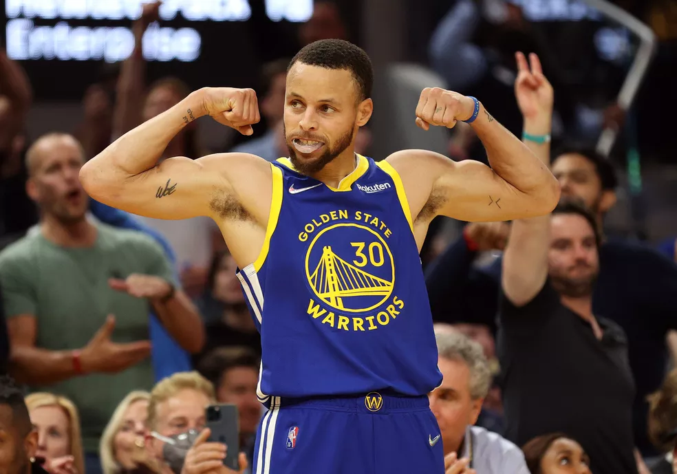

Armador dos Warriors deixou a faculdade depois de ser draftado em 2009 e retornou para completar a graduação de Bacharel de Artes com especialização em Sociologia
Depois de ser um dos destaques da NCAA de 2009 com uma média de 28.6 pontos por jogo, Curry foi o sétimo escolhido no geral e draftado pelo Golden State Warriors. O armador optou por deixar a faculdade faltando um semestre para finalizá-la, segundo a Davidson College, para focar na Liga.
Em nota, a universidade informou que o jogador refez sua matrícula no início de 2022 e trabalhou com dois membros do corpo docente de Davidson, um professor da Universidade de Stanford e um professor da UC Santa Cruz, que deu aula para o armador na época em que ele estava na faculdade. Em suas redes sociais, Curry celebrou a conquista e disse estar feliz por cumprir a promessa que fez quando saiu: "Sonho se tornou realidade!".
Ultimas Curiosidades